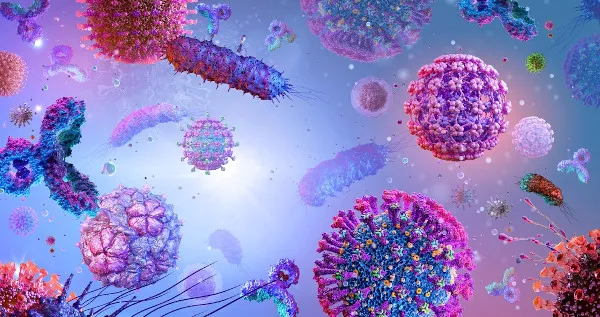
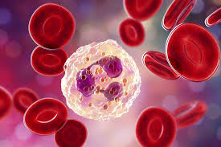

Líder em biotecnologia e diagnósticos de saúde em Toledo, PR. Unimos alta tecnologia a um atendimento humanizado para resultados laboratoriais impecáveis.
Combinamos padrões rigorosos de qualidade com as mais recentes inovações globais para servir a comunidade de Toledo.
Instrumentação de última geração para detecção precoce e análise minuciosa de patologias.
Aderência total aos protocolos internacionais de segurança e precisão diagnóstica.
Profundamente enraizados no ecossistema de saúde de Toledo, conhecemos sua história.
Explore nosso catálogo completo de análises clínicas.

Análise detalhada de microorganismos patogênicos.
Avaliação de processos químicos corporais e enzimas.

Estudo completo dos componentes e doenças do sangue.
Diagnósticos complexos do sistema imunitário.
Solicite seu orçamento online agora mesmo de forma rápida e segura.
Nossa equipe entrará em contato em
minutos.